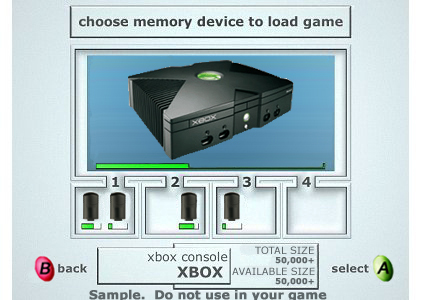
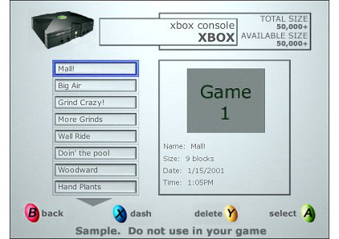

Top Three Design Considerations (Load / Save)
Load Game
- Use graphics to show the different storage devices on the system.
- Order the saved games chronologically from newest to oldest.
- Show metadata associated with the save so that the user can intelligently choose which game to load.
Save Game
- Make the hard disk the default storage location. It's much faster and can store many more games.
- Name the game based on context if you allow users to save many different games. Avoid displaying a virtual keyboard.
- Show but don't let users select a memory device with not enough available storage.
Recommended Load / Save Game Screens
| Device Selection |
|---|
 |
Users liked:
- Being able to see devices connected to the system.
- The space used on each device.
- The personalized name of the device.
|
| Saved Game Selection |
|---|
 |
Users liked:
- Larger image of the saved game.
- Easy saved game list navigation.
- Chronological order of saved games from newest to oldest.
- Additional data available about saves.
|
The Take Home Message
Participants strongly preferred the models with graphical elements to the flat list used in most of today's console video games. No participant chose the flat list despite the fact that it contained the same information as the other two models. We recommend the GUI model for location selection.
Participants also preferred the model shown on the right for both load and save game; therefore, we are developing the hybrid model as our reference UI for load and save selection. This model is easier to navigate, probably scales a little better, and doesn't depend on a bitmap to convey most of its information.